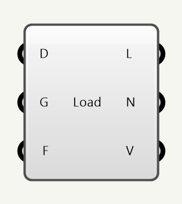

BEFORE THE WORKED EXAMPLES
The components and their ports.
Understand what each component does, what enters on the left and what comes out on the right before building the plate example.
Component, port and wire
- A component performs one task.
- An input port is a socket on its left. Its label is local to that component.
- An output port is a socket on its right. Connect this output to a compatible input on the next component.
- A wire carries data. Hover over a port to read its full name, data type and description.
For example, Domain G is the grid output, while Support G expects the geometry used to select nodes. The same letter can mean different things on different components.
The data you supply
| Data | Create it with | Typical use |
|---|---|---|
| Closed curve | Rectangle or Circle parameter | Boundary B, optional Holes H and Keep K on Domain |
| Number | Number Slider | Cell size h, thickness or force component |
| Integer | Whole-number slider | Mode, case index or field selection |
| Point | Construct Point with X/Y/Z | Support or Load geometry selection G |
| Vector | Vector XYZ | Total force F or gravity acceleration g |
| Boolean | Boolean Toggle or Button | Fix X/Y, Run, Stop, Reset or Preview |
| TopOptLab data | Upstream component output | Domain, supports, loads, load cases, material, settings and results |
Geometry chooses a location or region. A number controls a value. A point locates the force; a vector sets its direction and magnitude. Connect model and result data from the component outputs shown below.
Defaults and required connections
A stored default is used when that input has no wire. Connect a slider or other control to override it. The table separates required data, optional data and defaults. Engineering requires its physical inputs before you press Run even though its interface can remain visible while they are missing.
Use a Button for Run so it sends a short pulse. Changing an input does not start a calculation automatically. Hold Shift when adding a second source wire to a list input such as Supports or Cases.
Classroom components
- TopOpt Domain
- TopOpt Support
- TopOpt Load
- TopOpt Material
- TopOpt Load Case
- TopOpt Engineering Settings
- TopOpt Engineering
- TopOpt FEM Results
- TopOpt Results
- TopOpt Compare Results
- TopOpt Gravity
- TopOpt Review Controls
- TopOpt Case Result
1 Geometry
TopOpt Domain
Converts a closed planar design area into square FEM cells.

What you give it
| Input | Expected data | Starting value or connection |
|---|---|---|
BBoundary | Curve geometryOne item · Required connection | Closed 120 × 60 mm rectangle in World XYOne closed planar outer contour |
HHoles | Curve geometryList of values · Optional connection | Leave empty for the reference plateClosed void contours |
KKeep | Curve geometryList of values · Optional connection | Leave empty for the reference plateClosed regions kept at full density; counted in Volume |
hCell size | Number (continuous value)One item · Default available; connect a control to override it | 6 mmSquare cell edge in model units |
PPlane | Plane (origin and axes)One item · Default available; connect a control to override it | World XYDesign plane; also defines support X/Y |
What it returns
| Output | Data | How you use it |
|---|---|---|
DDomain | Structured TopOptLab data (connect the upstream output) | Discretized domain |
GGrid | Mesh geometry | Actual active FEM cells |
KPreserved | Mesh geometry | Cells held at density one |
Check before continuing: A numeric slider belongs at lowercase h. Uppercase H accepts closed hole curves.
2 Conditions
TopOpt Support
Selects grid nodes and constrains their local X and Y translations.

What you give it
| Input | Expected data | Starting value or connection |
|---|---|---|
DDomain | Structured TopOptLab data (connect the upstream output)One item · Required connection | Domain DTopOpt Domain |
GSelection | Geometry selectionList of values · Required connection | Left boundary edge onlySupport points or curves |
XFix X | Boolean (True/False)One item · Default available; connect a control to override it | TrueConstrain local X translation |
YFix Y | Boolean (True/False)One item · Default available; connect a control to override it | TrueConstrain local Y translation |
What it returns
| Output | Data | How you use it |
|---|---|---|
SSupport | Structured TopOptLab data (connect the upstream output) | Connect one or more supports to Solver |
NNodes | Point geometry | Actual constrained nodes |
Check before continuing: Connecting the complete rectangle to G constrains the reachable perimeter. Select the intended edge and inspect N.
2 Conditions
TopOpt Load
Selects grid nodes and assigns a total in-plane force vector.


What you give it
| Input | Expected data | Starting value or connection |
|---|---|---|
DDomain | Structured TopOptLab data (connect the upstream output)One item · Required connection | Domain DTopOpt Domain |
GSelection | Geometry selectionList of values · Required connection | Point at (120, 30, 0) mmLoad points or curves |
FTotal force | Vector (direction and magnitude)One item · Default available; connect a control to override it | Vector (0, −100, 0) NWorld vector, in plane. Total force for this component |
What it returns
| Output | Data | How you use it |
|---|---|---|
LLoad | Structured TopOptLab data (connect the upstream output) | Connect one or more loads to Solver |
NNodes | Point geometry | Actual loaded nodes |
VDirections | Line geometry | Direction glyphs, one cell long; force magnitude is the input F |
Check before continuing: G is the location. F is a force vector. The vector is the total force, divided across unique selected nodes.
0 Engineering
TopOpt Material
Declares material properties and consistent geometry/force units.

What you give it
| Input | Expected data | Starting value or connection |
|---|---|---|
PresetPreset | Integer (whole number)One item · Default available; connect a control to override it | 0: structural steel0: structural steel; 1: injection-molded ABS GP-22 reference |
UnitsLength unit | Integer (whole number)One item · Default available; connect a control to override it | 0: mm0: mm; 1: m. Must match geometry coordinates |
Force unitsForce unit | Integer (whole number)One item · Default available; connect a control to override it | 0: N0: N; 1: kN |
SFSafety factor | Number (continuous value)One item · Default available; connect a control to override it | 1.5, screening onlyScreening only, not automatic code verification |
StockStock thickness mm | Number (continuous value)One item · Default available; connect a control to override it | 0: no stock yield comparisonS235 reference yield only enabled for declared stock thickness >0 and <=16 mm |
E overrideE override MPa | Number (continuous value)One item · Default available; connect a control to override it | 0: use preset0 uses preset |
nu overridePoisson override | Number (continuous value)One item · Default available; connect a control to override it | −1: use preset-1 uses preset. ABS default 0.35 is an assumption |
What it returns
| Output | Data | How you use it |
|---|---|---|
MMaterial | Structured TopOptLab data (connect the upstream output) | Connect to Engineering |
EYoung modulus | Number (continuous value) | Force/length squared in selected units |
nuPoisson ratio | Number (continuous value) | Elastic Poisson ratio |
InfoProvenance | Readable text or file path | Sources and limitations |
Check before continuing: Geometry coordinates, material length units and force-vector units must agree.
0 Engineering
TopOpt Load Case
Collects simultaneous loads into one named analysis case.

What you give it
| Input | Expected data | Starting value or connection |
|---|---|---|
LLoads | Structured TopOptLab data (connect the upstream output)List of values · Required connection | Load L, one or more simultaneous loadsPoint loads, Surface Load or Gravity outputs |
NameName | Text labelOne item · Default available; connect a control to override it | Case 1Unique case name |
WWeight | Number (continuous value)One item · Default available; connect a control to override it | 1Positive objective weight |
What it returns
| Output | Data | How you use it |
|---|---|---|
CaseLoad case | Structured TopOptLab data (connect the upstream output) | Engineering load case |
Check before continuing: Loads within one case act together. Different cases are solved independently. W is an objective weight, not a structural load factor.
0 Engineering
TopOpt Engineering Settings
Controls the solver, material budget, thickness, convergence and verification threshold.

What you give it
| Input | Expected data | Starting value or connection |
|---|---|---|
BackendBackend | Integer (whole number)One item · Default available; connect a control to override it | 0: CPU direct0 CPU direct; 1 CPU CG; 2 CPU AMG; 3 CPU matrix-free; 4 CUDA CG |
ThreadsCPU threads | Integer (whole number)One item · Default available; connect a control to override it | 4BLAS thread limit; not a guarantee all solver stages run in parallel |
VolumeVolume fraction | Number (continuous value)One item · Default available; connect a control to override it | 0.40Includes Keep material |
IterationsIteration limit | Integer (whole number)One item · Default available; connect a control to override it | 80Maximum optimization iterations |
RadiusFilter radius | Number (continuous value)One item · Default available; connect a control to override it | 1.8 cells = 10.8 mm at h = 6 mmIn cells |
Thickness2D thickness | Number (continuous value)One item · Default available; connect a control to override it | 2 mmIn selected model length units |
C toleranceObjective tolerance | Number (continuous value)One item · Default available; connect a control to override it | 0.001Relative objective change |
D toleranceDesign tolerance | Number (continuous value)One item · Default available; connect a control to override it | 0.01Maximum density change |
WindowConvergence window | Integer (whole number)One item · Default available; connect a control to override it | 5Consecutive stable iterations |
MinimumMinimum iterations | Integer (whole number)One item · Default available; connect a control to override it | 10Before testing convergence |
ThresholdThreshold | Number (continuous value)One item · Default available; connect a control to override it | 0.40 for guided verificationFinal-shape verification threshold |
ProcessManufacturing process | Integer (whole number)One item · Default available; connect a control to override it | 0: unspecified0 unspecified; 1 machining; 2 injection molding; 3 additive. Process checks are advisory |
SymmetrySymmetry axis | Integer (whole number)One item · Default available; connect a control to override it | 0: none0 none; 1 X; 2 Y; 3 Z. Domain and Keep must be symmetric |
ExtrusionExtrusion axis | Integer (whole number)One item · Default available; connect a control to override it | 0: none3D only; 0 none; 1 X; 2 Y; 3 Z |
FeatureMinimum feature | Number (continuous value)One item · Default available; connect a control to override it | 0: no requested feature diagnosticRequested length; voxel erosion diagnostic, not an enforced thickness constraint |
Keep attachmentsKeep attachments | Boolean (True/False)One item · Default available; connect a control to override it | TruePreserve active cells touching support and point-load nodes. Surface-load cells are always preserved |
RAMRAM budget GiB | Number (continuous value)One item · Default available; connect a control to override it | 0 for this 2D plate3D only: 0 uses 60% of currently free RAM. Positive value is a lower budget. Leave 0 for 2D. |
Radius lengthPhysical filter radius | Number (continuous value)One item · Default available; connect a control to override it | 0: use Radius in cellsModel length units; 0 uses Radius in cells. Keep this length fixed when comparing grid refinements. |
What it returns
| Output | Data | How you use it |
|---|---|---|
OSettings | Structured TopOptLab data (connect the upstream output) | Connect to Engineering |
Check before continuing: Radius is measured in cells unless Radius length is positive. Threshold and material budget describe different operations.
0 Engineering
TopOpt Engineering
Runs baseline FEM, density optimisation or thresholded full-material verification.

What you give it
| Input | Expected data | Starting value or connection |
|---|---|---|
DDomain | Structured TopOptLab data (connect the upstream output)One item · Required before Run starts | Domain D2D or 3D Domain |
SSupports | Structured TopOptLab data (connect the upstream output)List of values · Required before Run starts | Support S, all supportsAll Support outputs |
CasesLoad cases | Structured TopOptLab data (connect the upstream output)List of values · Required before Run starts | Load Case Case, all independent casesNamed independent Load Case outputs |
MMaterial | Structured TopOptLab data (connect the upstream output)One item · Required before Run starts | Material MMaterial component |
OSettings | Structured TopOptLab data (connect the upstream output)One item · Required before Run starts | Engineering Settings OEngineering Settings |
ModeMode | Integer (whole number)One item · Default available; connect a control to override it | 0 baseline, 1 optimisation, 2 verification0 FEM baseline; 1 optimization; 2 threshold verification |
SourceSource result | Structured TopOptLab data (connect the upstream output)One item · Required only for Mode 2, after Mode 1 completes | Mode 2 only: completed Mode 1 Result RMode 2 only: completed engineering optimization with unchanged inputs |
RunRun | Boolean (True/False)One item · Default available; connect a control to override it | Button pulse after inputs are connectedStart a new job |
StopStop | Boolean (True/False)One item · Default available; connect a control to override it | Button pulse to cancelCancel job |
ResetReset | Boolean (True/False)One item · Default available; connect a control to override it | Button pulse to clear this componentDetach job and clear result |
LimitsDesign limits | Structured TopOptLab data (connect the upstream output)One item · Optional connection | Leave empty in the guided plateOptional Design Limits component; applies to every case |
What it returns
| Output | Data | How you use it |
|---|---|---|
RResult | Structured TopOptLab data (connect the upstream output) | Use Results 3D, or 2D FEM Results / Results matching Mode. Use Case Result to select a case after completion |
SStatus | Readable text or file path | Completion is distinct from convergence |
JJob folder | Readable text or file path | Project, case files, history and report.html |
ReportReport | Readable text or file path | HTML report file path |
Check before continuing: Use three separate Engineering components to preserve results. Mode 2 Source takes completed Mode 1 R, not Results M.
5 FEM
TopOpt FEM Results
Displays a full-material 2D FEM response with stress, displacement and reaction data.

What you give it
| Input | Expected data | Starting value or connection |
|---|---|---|
RFEM Result | Structured TopOptLab data (connect the upstream output)One item · Required connection | Engineering R from Mode 0 or Mode 2From FEM Analyze |
FieldField | Integer (whole number)One item · Default available; connect a control to override it | 1: displacement; 0 or 2: von Mises stress0 or 2 = von Mises stress; 1 = displacement magnitude |
ScaleDeformation scale | Number (continuous value)One item · Default available; connect a control to override it | 1: actual deformation; 0: original shapePreview only: 0 = original shape; 1 = actual displacements |
MaxLegend maximum | Number (continuous value)One item · Default available; connect a control to override it | 0: automatic legend0 auto; positive fixes the field scale |
PreviewShow preview | Boolean (True/False)One item · Default available; connect a control to override it | True for the visible stageTurn this stage preview and legend on/off |
What it returns
| Output | Data | How you use it |
|---|---|---|
MeshColored mesh | Mesh geometry | Selected field on scaled geometry |
VMVon Mises | Number (continuous value) | Maximum of four Gauss-point values per cell; force/length^2 |
SxSigma X | Number (continuous value) | Mean Gauss-point sigma_x per cell, DOMAIN axes; force/length^2 |
SySigma Y | Number (continuous value) | Mean Gauss-point sigma_y per cell, DOMAIN axes; force/length^2 |
TxyTau XY | Number (continuous value) | Mean Gauss-point shear per cell, DOMAIN axes; force/length^2 |
PNodes | Point geometry | World nodes in the same order as U and reactions |
UDisplacements | Vector (direction and magnitude) | Actual WORLD displacement vectors, length units, aligned to P |
ReacReactions | Vector (direction and magnitude) | WORLD support reactions, force units, aligned to P; zero on free DOFs |
InfoInfo | Readable text or file path | Color legend, material, extrema and limitations |
Check before continuing: Scale changes only the display. Read Info, the legend and actual displacement values.
4 Results
TopOpt Results
Displays the continuous density design and its thresholded geometry.

What you give it
| Input | Expected data | Starting value or connection |
|---|---|---|
RResult | Structured TopOptLab data (connect the upstream output)One item · Required connection | Engineering R from Mode 1Live result from Solver |
TThreshold | Number (continuous value)One item · Default available; connect a control to override it | 0.40Keep cells with density >= threshold |
SDeformation scale | Number (continuous value)One item · Default available; connect a control to override it | Display scale; does not change the solveVisual scale only, does not alter calculation |
BakeBake | Boolean (True/False)One item · Default available; connect a control to override it | Leave False; a Button explicitly adds geometryButton pulse: add the current threshold mesh to Rhino |
FieldField | Integer (whole number)One item · Default available; connect a control to override it | 0: density0 density; 1 displacement; 2 relaxed design stress |
MaxLegend maximum | Number (continuous value)One item · Default available; connect a control to override it | 0: automatic legend0 auto; positive fixes stress/displacement scale |
PreviewShow preview | Boolean (True/False)One item · Default available; connect a control to override it | True for the visible stageTurn this stage preview and legend on/off |
What it returns
| Output | Data | How you use it |
|---|---|---|
DDensity | Mesh geometry | Undeformed mesh colored by selected Field; default density |
MShape | Mesh geometry | Thresholded planar mesh; not reanalysed |
UDeformed | Mesh geometry | Density mesh with scaled displacement |
InfoMetrics | Readable text or file path | Metrics for exactly the displayed density |
Check before continuing: M is thresholded display geometry before full-material reanalysis. Design stress is relaxed during optimisation.
0 Engineering
TopOpt Compare Results
Compares a matching full-solid baseline and candidate across all load cases.

What you give it
| Input | Expected data | Starting value or connection |
|---|---|---|
BaselineBaseline FEM | Structured TopOptLab data (connect the upstream output)One item · Required connection | Completed baseline Engineering R, Mode 0Completed full-solid Engineering FEM |
CandidateCandidate | Structured TopOptLab data (connect the upstream output)One item · Required connection | Completed verification Engineering R, Mode 2Completed optimization or final verification |
What it returns
| Output | Data | How you use it |
|---|---|---|
InfoSummary | Readable text or file path | Mass, displacement, stress and checks |
DataComparison | Structured TopOptLab data (connect the upstream output) | Structured comparison JSON |
SavingMass saving percent | Number (continuous value) | Positive means lighter than baseline |
Check before continuing: Both jobs must be completed and use matching geometry, supports, cases, material and units.
0 Engineering
TopOpt Gravity
Creates a self-weight load from the grid, acceleration and material density at solve time.

What you give it
| Input | Expected data | Starting value or connection |
|---|---|---|
DDomain | Structured TopOptLab data (connect the upstream output)One item · Required connection | Roof Domain D2D or 3D domain |
gAcceleration | Vector (direction and magnitude)One item · Default available; connect a control to override it | XY roof: (0, −9.80665, 0) m/s² for cases 1 and 5; cases 2–4 use (0, −12.748645, 0) m/s²World acceleration in m/s^2; for XY 2D use (0,-9.80665,0) |
What it returns
| Output | Data | How you use it |
|---|---|---|
LLoad | Structured TopOptLab data (connect the upstream output) | Connect to Load Case, then Engineering |
InfoInfo | Readable text or file path | Self-weight behavior |
Check before continuing: Gravity takes D and g. It has no M input. Density comes from the Material connected to Engineering.
0 Engineering
TopOpt Review Controls
Chooses the visible stage, saved case index and displayed field.

What you give it
| Input | Expected data | Starting value or connection |
|---|---|---|
StageVisible stage | Integer (whole number)One item · Default available; connect a control to override it | 0 baseline, 1 optimisation, 2 verification0 baseline FEM; 1 optimization; 2 voxel verification; 3 extracted geometry; 4 final TET4 FEM |
CaseCase index | Integer (whole number)One item · Default available; connect a control to override it | 1 to 5 for the completed roof calculations1-based |
FieldField | Integer (whole number)One item · Default available; connect a control to override it | 1: displacement; 2: stress0 default (FEM stress / design density); 1 displacement; 2 stress (relaxed during design) |
What it returns
| Output | Data | How you use it |
|---|---|---|
BaselineShow baseline | Boolean (True/False) | Connect to Results Preview input |
OptimizeShow optimization | Boolean (True/False) | Connect to Results Preview input |
VerifyShow verification | Boolean (True/False) | Connect to Results Preview input |
CaseCase index | Integer (whole number) | Connect to Case Result |
FieldField | Integer (whole number) | Connect to Results Field |
SurfaceShow surface | Boolean (True/False) | Connect to Final Geometry Results Preview |
Final FEMShow final FEM | Boolean (True/False) | Connect to Final FEM Results Preview |
Check before continuing: Stage switches visibility. It does not run a calculation.
0 Engineering
TopOpt Case Result
Reads one saved case response from a completed Engineering result.

What you give it
| Input | Expected data | Starting value or connection |
|---|---|---|
REngineering result | Structured TopOptLab data (connect the upstream output)One item · Required connection | Completed Engineering R for the selected stageAny Engineering stage |
CaseCase index | Integer (whole number)One item · Default available; connect a control to override it | 1 to 5 for the roof; index starts at 11-based case index |
What it returns
| Output | Data | How you use it |
|---|---|---|
RCase result | Structured TopOptLab data (connect the upstream output) | Connect to the matching Results component |
InfoInfo | Readable text or file path | Case list and selected case |
Check before continuing: Cases after the first require a completed job and intact saved case files.
Now build the example
Begin with the reference plate and use the connection walkthrough as you add each wire. Keep the complete 33-component guide available for the advanced 3D tools and less-used controls.